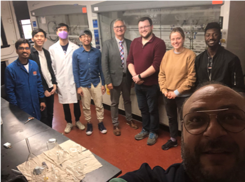
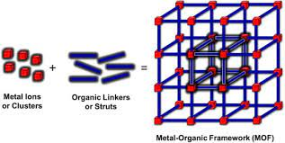
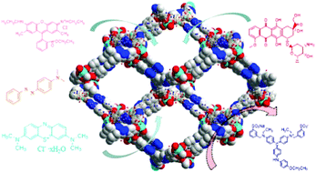

Materials and Discovery Lab (MaD Lab)
Spring 2021-Current
Click here for the research website

In the Materials and Discovery Lab (MaD Lab) we make use of the growing up and coming material: Metal-Organic
Frameworks (MOFs). MOFs have been seeing increasing applications and have piqued the interest of numerous chemists,
inorgnic and organic, material scientists and chemical engineers. Over the last few decades, MOFs have been in the
forefront of research for their myriad of applications. The coordinator of the MaD lab is Dr. Kyriakos Stylianou, an
assistant professor at Oregon State University who has spent the bulk of his research studying on MOFs and their
applications to real world scenarios
Metal-organic frameworks are so named because that is exactly what they are: a structure or framework of a series of
atoms consisting of metals and organic material. The metal atom is the center of this framework and it bears organic
attachments, or ligands, around them. In coordination chemistry, these ligands attach to other metal centers, thus
forming this network of metal ion clusters to coordinated organic ligands. These structures form the paradign unit
cell which gives rise to extremely porous material. As these frameworks form three dimensional space, MOFs are
particularly useful in their taking advantage of such surface area. For example, some MOF material have shown surface
areas of over six-thousand square meters per gram. With more surface area, the more storage that is possible for gasses as they
preferentially bind themselves to the surface of any container that is in. This is why MOFs have been seeing
increasing application in the methane gas storage. In the MaD lab, we synthesize new MOFs with the purpose of
utilizing some of their other uses, such as gas capture and storage, cataysis and photocatalysis, sensing and
detection or specific analytes, and separation.
 